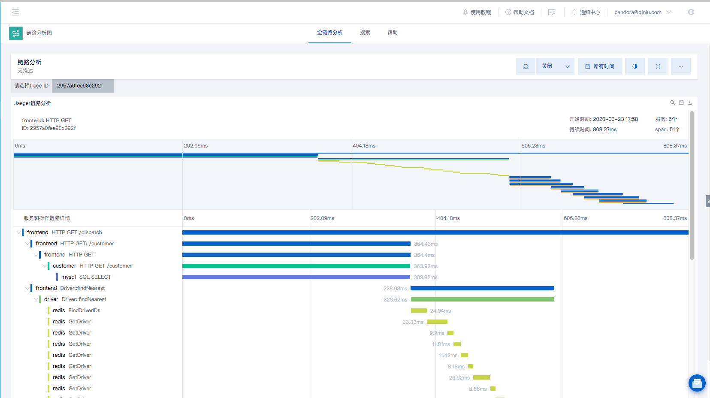
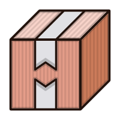

--- Pandora 团队
应用由XML文件组建而成，可展示仪表盘，搜索及可视化页面
应用用于补充平台不支持的可视化图表
应用用于补充平台不支持的可视化图表
可用于最大化的自定义业务逻辑
https://www.npmjs.com/package/create-pandora-app
$ npx create-pandora-app appName修改 view 相关的 xml 打包即可
$ cd visualization-app/develop$ yarn setup && yarn start$ yarn package$ cd component-app/develop$ yarn setup && yarn start
import { SearchManager, EEventName } from '@qn-pandora/app-sdk'
const searchCondition = {
queryString: `
repo="app_doc"
| fields _time, request.url, request.method, response.statusName, action.name
| limit 10
`, // 搜索条件
time: {
start: 0, // 起始时间
end: 1597588690623 // 结束时间
}
}
const option = {
task: {
event: true,
summary: false,
timeline: false,
result: true
}
}
const searchManager = new SearchManager({
option: option
})
searchManager.on(EEventName.DONE, ({ result }) => {
setDataset(result)
})
searchManager.search(searchCondition)
$ yarn package